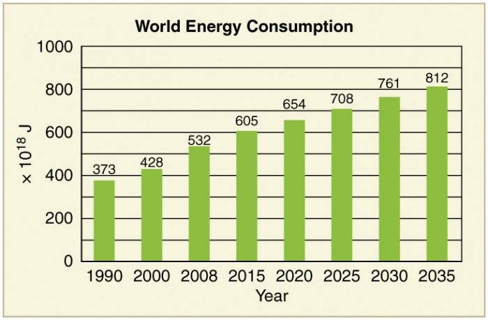

The earth provides enough to satisfy every man’s needs but not every man’s greed said Gandhiji. Hard facts on why energy conservation is a must are outlined below. We use energy faster than it can be produced - Coal, oil and natural gas - the most utilised sources take thousands of years for formation. Energy resources are limited - India has approximately 1% of world’s energy resources but it has 16% of world population. Most of the energy sources we use cannot be reused and renewed - Non renewable energy sources constitute 80% of the fuel use. It is said that our energy resources may last only for another 40 years or so. We save the country a lot of money when we save energy - About 75 per cent of our crude oil needs are met from imports which would cost about Rs.1, 50,000 crore a year We save our money when we save energy - Imagine your savings if your LPG cylinder comes for an extra week or there is a cut in your electricity bills We save our energy when we save energy - When we use fuel wood efficiently, our fuel wood requirements are lower and so is our drudgery for its collection Energy saved is energy generated - When we save one unit of energy, it is equivalent to 2 units of energy produced Save energy to reduce pollution - Energy production and use account to large proportion of air pollution and more than 83 percent of greenhouse gas emissions An old Indian saying describes it this way - The earth, water and the air are not a gift to us from our parents but a loan from our children. Hence we need to make energy conservation a habit.
